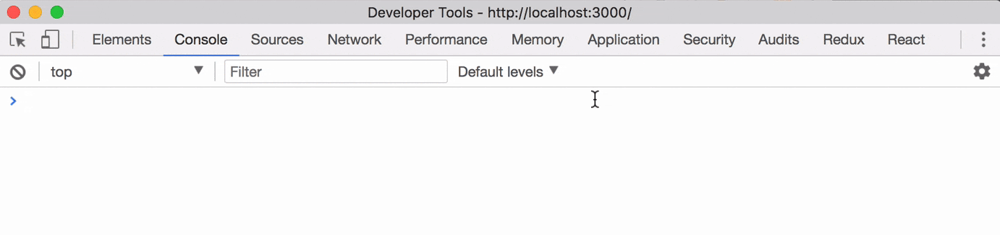
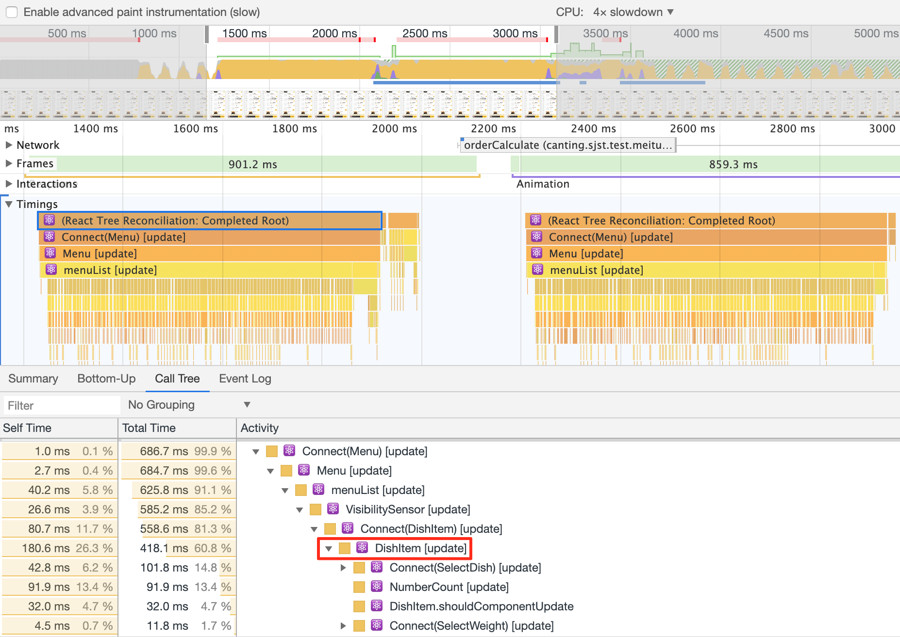
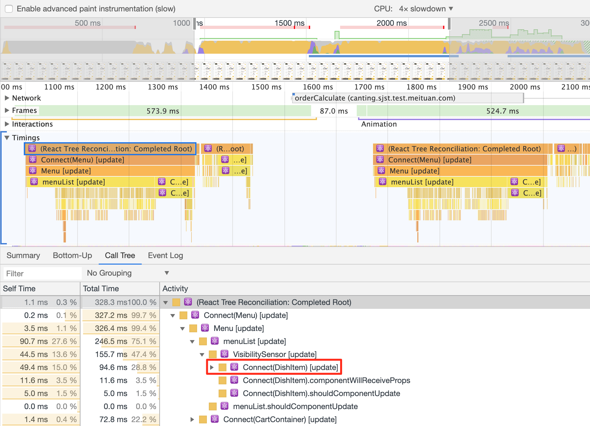
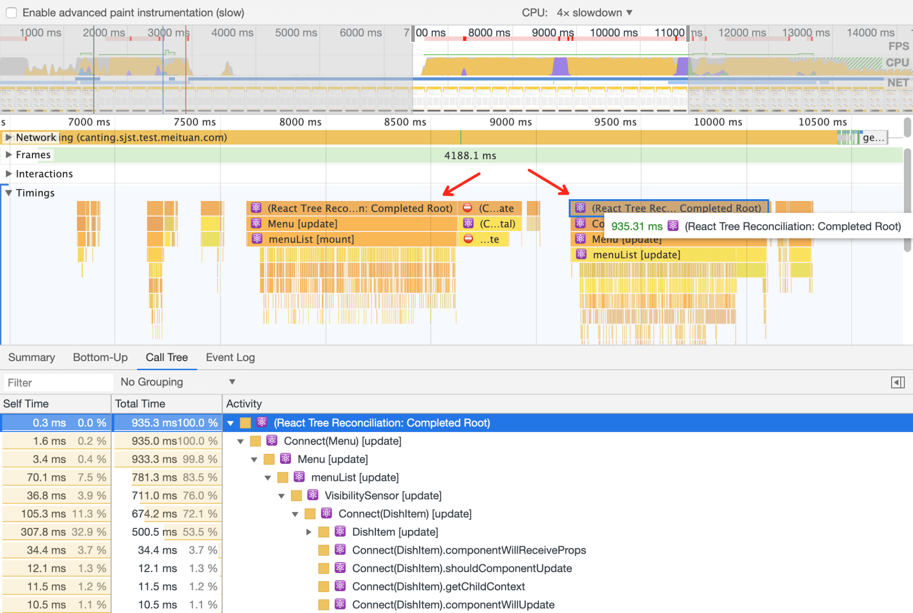
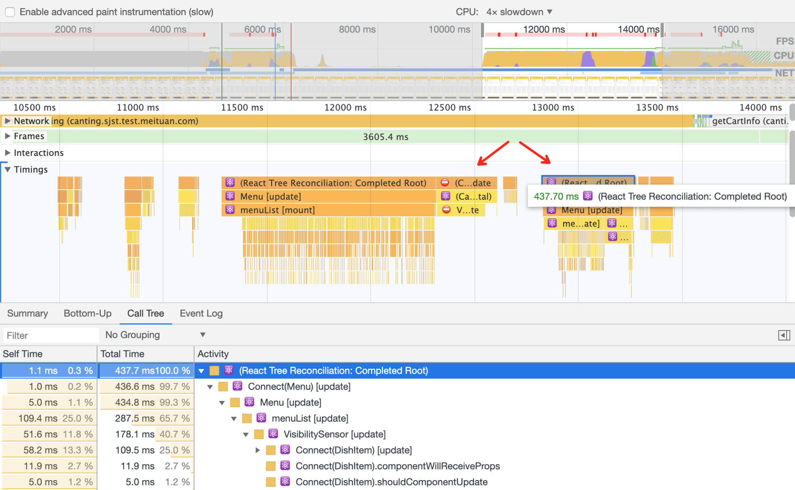

React memo 是 React16 新引入的特性，旨在优化函数组件的渲染性能，原生的效果还不错，但我觉得还是可以优化。于是最近我将它引入到点餐项目的菜单页并做了渲染判别的优化，从而能适配不同的场景条件。

memo的简单介绍
React 中提供了类组件(Class Component)和函数组件(Functional Component)两种组件的写法。在类组件中 ，可以通过重写 shouldComponentUpdate 或者使用 PureComponent 来优化组件性能，避免不必要的重复渲染。而针对函数组件，在 React16 之前还没有提供这样的优化手段，React16 之后，可以通过 React.memo 来优化函数组件，避免组件重复渲染，它判别是否渲染的机制在于 props 中的变量是否有变化，和 PureComponent 的机制有些相似，它也是浅比较的，为了深层比较，可以做一次优化。
菜单页菜品渲染问题
菜单页的菜品列表通过遍历 DishItem 渲染出来。我尝试记录多处复用的 DishItem 性能表现。
在 DishItem 中的 NumerCount 函数组件中输出 console 来记录该组件被渲染的次数，如下是一个示例
可以看到，菜品列表中有一处的 NumerCount，所有的 NumerCount 有 38 个都触发了重新渲染，并且渲染了两次，一次是加菜到本地，一次是获取pike消息后，总共渲染了 38*2 次；即使只有一个 NumberCount 变化了，其他的 NumerCount 并没有数据的变化也触发了渲染。如果菜品多达数百，这将带来很大的性能开销。
我们再来看看性能的表现，我尝试修改 Performance 参数以贴近移动端的 CPU 处理。

记录加菜时组件的渲染性能，有两次渲染，一次是加菜到本地触发的渲染，一次是一起点场景下收到服务端 websocket 推动消息后触发的渲染。看看第一次渲染中大概花费 686ms，频繁触发更新的 DishItem 占据了其中的 81%，而 DishItem 包含多次复用的 NumerCount、SelectDish 等组件。对这类组件的优化是很有必要的。

优化策略
针对上述问题的优化方案在文首有提及，就是 React16 中 memo 了，它针对的是函数组件的渲染优化。上述的问题是项目中的冰山一角，项目中用到的函数组件都可采用这个策略进行优化，因为这看起来会影响用户体验，尤其是在弱网环境或者是菜品数量庞大的场景下会比较明显。
React 的浅比较
我们来对影响较大的函数组件做个优化，尤其是被多次复用的组件，比如 NumberCount。
1 | const NumberCount = (props) => { |
通过React memo封装后
1 | const NumberCount = (props) => { |
是不是很简单。但是有一个问题，React.memo 的内部算法使用的是浅比较，是什么样的呢
看看 React 的 shallowEqual 源码
1 | function is(x: any, y: any) { |
基本上采用全等的方式来对比变量的变化
1 | function shallowEqual(objA, objB) { |
采用全等的方式会有啥问题，来看看
1 | const map1 = { a: 1, b: 1, c: 1 }; |
因为引用地址不一样，所以两个对象不一样，这样会导致什么问题。
如果组件传入的 props 的变量前后的值并没有变化，通过memo的浅比较后判断它们是不同的，会导致组件触发重新渲染，而这样的重新渲染是不必要的操作。
优化memo 浅比较机制
可以通过深层比较，再判断值是否一样，即使用 Immutabe 中的 is 来做高效率的深层判断。
1 | const map1 = Immutable.Map({ a: 1, b: 1, c: 1 }); |
基于此，我们来重写 React memo 的防重复渲染机制，并和组件解耦合。遍历变化前后的 props，对于非 Immutable 的变量做一层转化，然后深层判断值是否有变化。当然建议传入的 props 的变量使用 Immutable 类型，以减少转化的开销。
1 | // MemoBaseComponent.jsx |
在函数组件 NumberCount 中我们这样使用它即可完成 memo 的优化机制。
1 | import ReactMemo from '@components/common/MemoBaseComponent'; |
优化效果
菜品加减菜渲染
为了对比效果，我们同样在 NumberCount 组件中输出 console 来记录加菜时该组件的渲染次数，可以看到，这回所有的 38 个 NumberCount，当只变更其中一个 NumberCount 变化时，只触发这个 NumberCount 变更，其他没有变化的 NumberCount 并没有触发重新渲染。
为了看到最终 DishItem 组件的渲染效果，我们来记录优化后加菜时，组件的渲染性能。同样，为了模拟移动端效果，我们将 CPU 性能调低。可以看到，第一次触发的整体渲染中大概花费 328ms，其中DishItem占据了其中的 28%，花费大概 94ms，第二次和第一次耗费的渲染时间差不多，总体来说，对比优化前，渲染性能提升了 50% 左右。

页面加载渲染
针对上面的优化，可以想到，如果购物车有菜的情况下，页面的加载渲染是会受影响的。因为页面初始化时会渲染一次，这时页面是静态的，购物车的数据还在本地缓存中；第二次是从本地缓存取出数据后渲染到页面。我们关注页面加载时，整体组件的渲染情况，不考虑前期的数据请求等。同样模拟移动端的情况降低 CPU 处理能力。
优化前
在核心渲染区，我选取了开始渲染和页面菜单显示出来那一刻之前的时间段。第二次渲染大概花费 935ms 的时间

优化后
同样在核心渲染区，我选取了开始渲染和页面菜单显示出来那一刻之前的时间段。第二次渲染大概花费 437ms 的时间，这是因为 DishItem 列表触发渲染时，没有数据变更的 DishItem 并不会触发重新渲染。

总结一下
对于引入 memo 菜单页的优化就介绍到这儿了，引入 memo 的场景主要针对函数组件，特别是多次复用的函数组件以及业务复杂的函数组件，建议一定使用上 memo，小小的优化堆积起来可能会带来很好的效果。以上的测试数据均是在模拟环境下进行的，显示的时间并不代表真实的环境，看到相对时间的变化才是重要的。